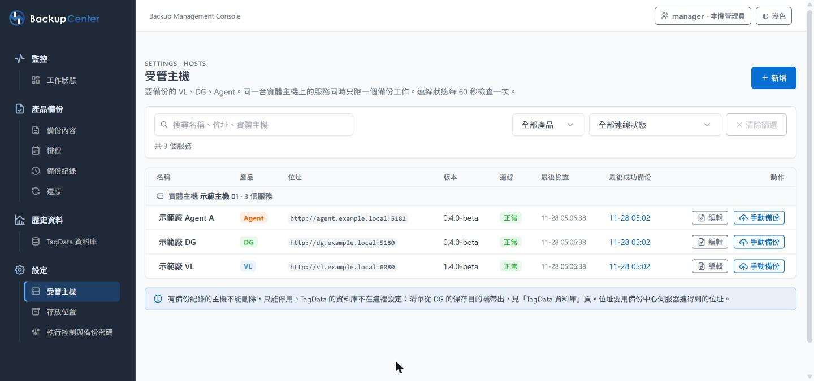
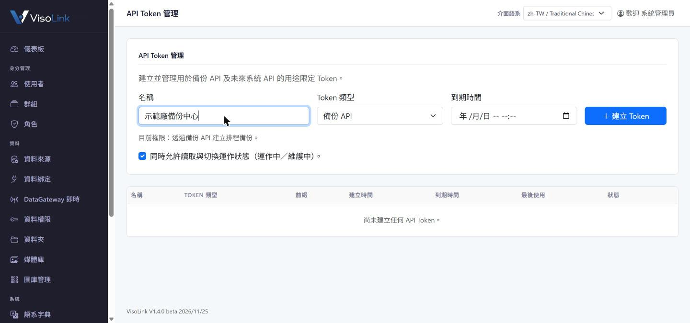
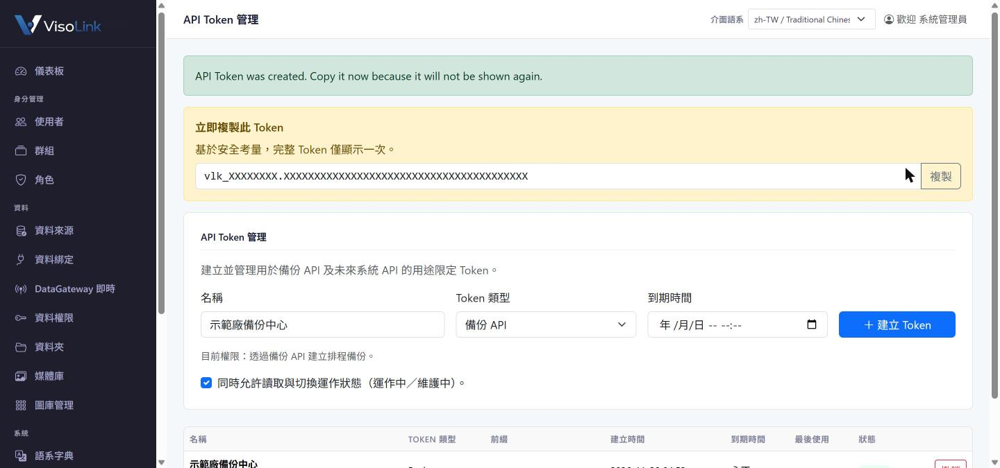
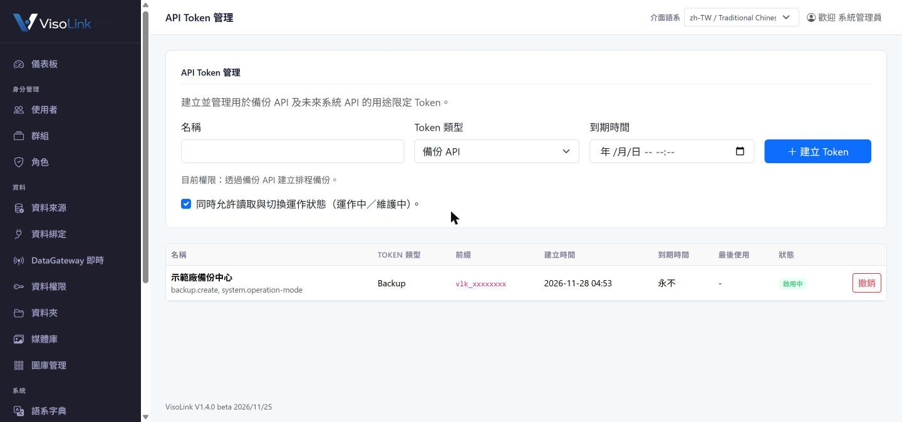
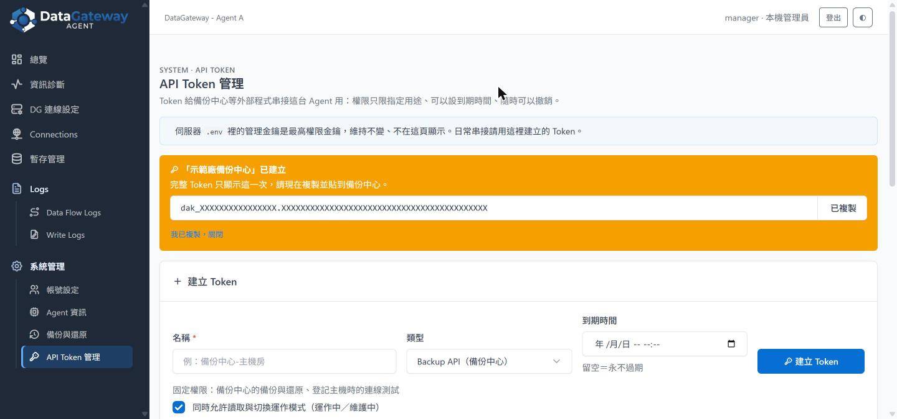
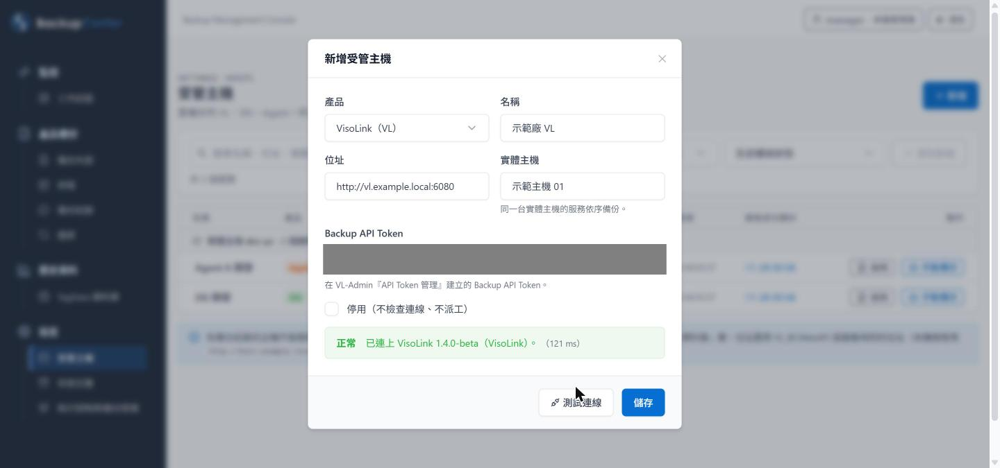
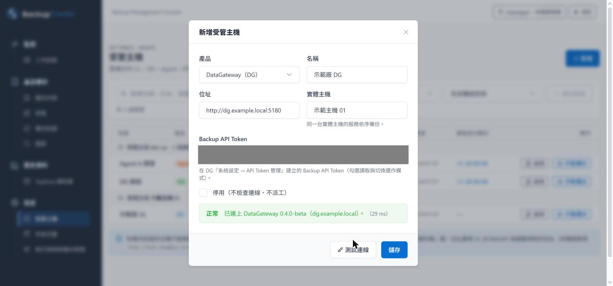
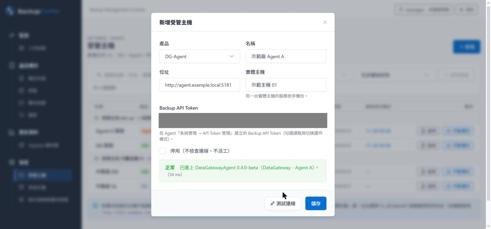

受管主機
登記要備份的 VL、DG、Agent。三套產品都用各自畫面建立的 Backup API Token 連線；備份中心每 60 秒檢查一次連線與版本，同一台實體主機上的服務同時只跑一個備份工作。
查看受管主機清單

- 用搜尋框找名稱、位址或實體主機；用下拉篩選產品與連線狀態。
- 按「最後成功備份」的時間可以跳到該主機的備份紀錄。
知道每台主機能不能備份、上次成功是什麼時候。
失敗時先查
- 清單是空的：先取得各產品的 API Token（下一節），再按「新增」登記主機。
取得 VL、DG、Agent 的 Backup API Token
備份中心對每台主機只需要一把憑證：在該產品畫面建立的 Backup API Token。完整 Token 只在建立當下顯示一次，請直接複製貼到備份中心，不要另外記在文件或訊息裡。
VL：在 VL 後台建立

- 登入 VL 後台，開左側「API Token 管理」。
- 「名稱」輸入用途，例如「示範廠備份中心」；「Token 類型」選「備份 API」；「到期時間」留空表示不過期。
- 確認勾選「同時允許讀取與切換運作模式（運作中／維護中）」：備份中心還原時要把 VL 切到維護中。
- 按「＋ 建立 Token」。
- 上方「立即複製此 Token」區塊顯示完整 Token（
vlk_開頭），按「複製」。


backup.create 與 system.operation-mode。VL 的完整說明見 後台手冊第 16 章。DG：在 DG 管理畫面建立
- 登入 DG，開左側「系統設定 › API Token 管理」。
- 「名稱」輸入用途，「類型」為「Backup API（備份中心）」，保持勾選「同時允許讀取與切換運作模式（運作中／維護中）」，按「建立 Token」。
- 上方「「名稱」已建立」區塊顯示完整 Token（
dgk_開頭），按「複製」。

Agent：在每台 Agent 的管理畫面建立
- 登入這台 Agent，開左側「系統管理 › API Token 管理」（每台 Agent 各自建立）。
- 同 DG 的步驟建立 Token，完整 Token 以
dak_開頭，按「複製」。

三套產品各有一把有效的 Backup API Token，已複製、準備貼到備份中心。
DG、Agent 伺服器上的管理金鑰是最高權限金鑰，維持不變、不在畫面顯示，也不用來登記備份中心。
失敗時先查
- 忘了複製、Token 遺失：完整 Token 無法再查看，在同一頁建立新的 Token，再撤銷舊的。
- VL 沒有勾「讀取與切換運作模式」：備份可以做，但還原時無法把 VL 切到維護中；重新建立一把有勾選的 Token。
登記 VL、DG、Agent
- 產品
- VisoLink（VL）、DataGateway（DG）或 DG-Agent；儲存後不能改。
- 名稱
- 在備份中心顯示的名稱，例如「示範廠 VL」。
- 位址
- 備份中心伺服器連得到的產品位址，格式
http://主機:連接埠，例如http://vl.example.local:6080（VL 伺服器 API）、http://dg.example.local:5180（DG）、http://agent.example.local:5181（Agent）。 - 實體主機
- 這個服務所在的機器名稱，例如「示範主機 01」；同一台實體主機的服務依序備份。
- Backup API Token
- 貼上 9.2 在該產品畫面建立的 Token；欄位會依產品提示
vlk_…、dgk_…、dak_…，輸入內容不顯示。

- 按「新增」。
- 選「產品」，填「名稱」「位址」「實體主機」。
- 在「Backup API Token」貼上該產品的 Token。
- 按「測試連線」，看到「正常 已連上 …」與回應時間。
- 按「儲存」，右下角出現「已儲存 名稱：正常」。依序登記 VL、DG 與 Agent。


清單出現這台主機，連線顯示「正常」並帶出產品版本（9.1 的圖）。
失敗時先查
- 「連不到」：位址要用備份中心伺服器連得到的位址與連接埠，確認防火牆。VL 要填伺服器 API 的位址，不是後台或前台網頁。
- 「憑證錯誤」：Token 貼得不完整、已撤銷或已過期；回到產品的「API Token 管理」看狀態，必要時建立新的。
- 「產品尚未支援備份工作介面」：產品版本太舊，不能選來備份或還原。
連線狀態的意思
- 正常
- 可以備份與還原。
- 連不到
- 位址錯誤、服務沒開或網路不通。
- 憑證錯誤
- API Token 錯誤、已撤銷或已過期。
- 產品尚未支援備份工作介面
- 產品版本不支援，不能選來備份或還原。
- 資料類型不一致
- 產品回報的資料類型與備份中心不同，請確認兩邊版本。
- 已停用
- 不檢查連線、不派工。
- 狀態每 60 秒自動更新，「最後檢查」顯示時間。
依狀態決定要修正位址、Token 或產品版本。
編輯、停用與刪除主機
- 按「編輯」修改名稱、位址、實體主機；「Backup API Token」留空表示不變更，換 Token 時貼上新的。
- 勾「停用（不檢查連線、不派工）」暫停這台主機。
- 沒有備份紀錄的主機才能按「刪除」；有備份紀錄的只能停用。
- 按「儲存」。
清單更新；換機或 Token 到期前，記得在這裡更新位址與 Token。
失敗時先查
- 「刪除」不能按：這台主機有備份紀錄，只能停用。